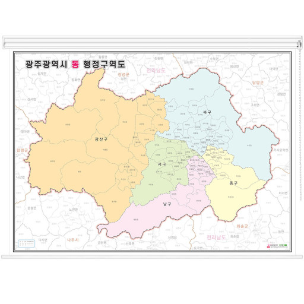
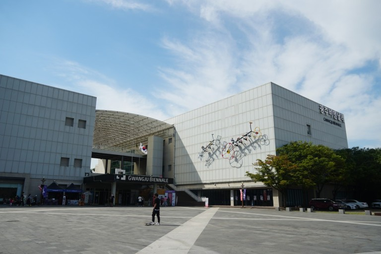

GWANGJU
- 광주 소개

- 문화예술의 중심지라 불리는 광주광역시. 예향의 본고장답게 '맛'과 '멋'이 조화를 이루며 남도의 문화를 이끌어 왔다고 해도 과언이 아니다.
광주의 대표 축제인 광주비엔날레를 중심으로 광주김치대축제, 광주국제영화제 등 5대 축제를 즐길 수 있을 뿐 아니라
문화예술시장으로 재탄생한 대인시장의 야시장에서는 밤여행의 묘미를 즐길 수 있다.
- 북동쪽으로 담양군, 북쪽으로 장성군, 서쪽으로 함평군, 남쪽으로 나주시, 남동쪽으로 화순군에 접한다. 서울·부산·대구·인천·대전에 이어 국내 제6위를 차지하는 대도시이며,
호남지방 최대의 도시이다. 2011년 현재 행정구분은 5개 자치구, 93개 행정동으로 이루어져 있으며, 시청 소재지는 광주시 서구 내방로 111이다.
- 무등산

- 유래 : 무진악이라는 이름은 무돌의 이두음으로 신라때부터 쓰인 이름이다. 무돌의 뜻은 무지개를 뿜는 돌이란 뜻이다. 무등산이란 명칭은 서석산과 함께 고려때부터 불려진 이름으로 비할데없이 높은 산 또는 등급을 매길 수 없는 산이란 뜻이다.
- 정보 : 광주광역시 동구의 학운동 및 지원2동과 북구의 석곡동, 전라남도 화순군의 화순읍 및 이서면과 담양군의 가사문학면에 걸쳐 있는 산이다. 최고봉은 천왕봉, 높이는 1,187m이다. 그래서 유명 관광지기도 한 무등산의 해발고도를 드러내기 위해 광주광역시는 원효사를 왕래하는 시내버스에 1187번을 지정해 운영한다. 광주전남 사람들이라면 누구나 잘 아는 산이다.
- 비엔날레

- 비엔날레란? : 격년제로 열리는 전람회 및 그 밖의 미술 행사 등을 가리키는 말이다. 비엔날레는 ‘격년제’란 뜻의 이탈리아어에서 따온 것으로 '격년 잔치', '격년 미술 잔치'라고도 한다.
- 정보 : 광주비엔날레는 2년마다 열리며, 제1회는 1995년 9월 20일~11월 20일 광주광역시 중외공원 전시관 등에서 세계 50개 국 90여 작가의 작품이 전시된 가운데 본전시·특별전·기념전 등 13개의 대형 전시회가 열리고 행사기간 동안 민속·무용·음악·연극 등의 부대행사도 벌어졌다.
- 주소 : 광주 북구 비엔날레로 111(용봉동 1022-3)
- 맛집 소개
- 송정 떡갈비 1호점(떡갈비)
- 주소 : 광주 광산구 광산로29번길 1
- 전화번호 : 062-944-1439
- 한식경(스파게티, 파스타 전문)
- 주소 : 광주 동구 동명로25번길 6-1 한식경
- 전화번호 : 0507-1324-3663
- 목하식당(오므라이스, 오믈렛)
- 주소 : 광주 동구 동명로25번길 6 1층 목하식당
- 전화번호 : 0507-1314-8904